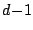

To overcome this limitation, we designed a new mass-conservative interface reconstruction method [1], which calculates the interface based on both volumes and centroids of the cell fractions. This choice of the input data allows to evaluate the interface normal in a mixed cell even without the information from the adjacent elements. The location of the linear interface in each mixed cell is determined by fitting the centroid of the cell fraction behind the interface to the reference one, which leads to ()-variate optimization problem in . The technique proposed, called Moment-of-Fluid (MoF) interface reconstruction, results in a second order accurate interface approximation (linear interfaces are reconstructed exactly), has higher resolution, and is shown to be more accurate than VoF-PLIC methods.
We present a detailed description of MoF interface reconstruction algorithm in 2D, which includes iterative procedure for centroid fitting and a new algorithm for cutting appropriate volume fractions from polygonal cells.
[1] V. Dyadechko and M. Shashkov, Moment-of-fluid interface reconstruction, Technical Report LA-UR-05-7571, Los Alamos National Laboratory, Los Alamos, NM, Oct 2005. http://math.lanl.gov/ vdyadechko/doc/2005-mof.pdf
[2] C. W. Hirt and B. D. Nichols, Volume of fluid (VOF) method for the dynamics of free boundaries, J. Comp. Physics 39(1) (1981) 201-25.
[3] J. E. Pilliod and E. G. Puckett, Second-order accurate volume-of-fluid algorithms for tracking material interfaces, J. Comp. Physics 199(2) (2004) 465-502.
[4] B. Swartz, The second-order sharpening of blurred smooth borders, Mathematics of Computation, 52(186) (1989) 675-714
[5] D. L. Youngs, An interface tracking method for a 3D Eulerian hydrodynamics code, Technical Report AWRE/44/92/35, Atomic Weapon Research Establishment, Aldermaston, Berkshire, UK, Apr 1987.